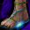

ヤティカヌ 刻印防具
2020/12アップデートで追加されたUMU防具。
1250Lv以上から入場可能なヤティカヌ地域にて入手可能。
刻印装備は通常の装備と違い、取引やオプションを付与できません。
ヤティカヌNPC「モリス」から「古代森のコイン」と「古代刻印石」「古代流れ石」を交換し、
それらのアイテムを強化素材として使用し、アイテムを強化していきます。
刻印レベルが上がると、オプションの性能が上昇します。

エンチャント情報は以下の通り。
|
|
|
|---|---|
|
|
|
|
|
|
|
|
|
|
|
|
|
|
|
※各種図案書、ブラックファイヤー強化、アイテム製錬を行う事ができます。
※各種エンチャントを行う事ができません。
※銀行保存、露店販売、取引、分解、ギルド倉庫保存、NPC販売を行う事ができません。
※刻印防具は、1つの刻印属性まで装備可能です。
※同じ刻印属性の装備はセットアイテムとして装備制限に依らず装備可能です。
| アイテム名 | 詳細 |
|---|---|
|
古代刻印石 |
古代森のコイン7枚と1個を交換することができる。 |
|
古代流れ石 |
・古代森のコイン3枚 ・神秘の石140個 ・結晶石140個 ・修復済みのタティリス遺跡の出土品250個 ・炎の石1個 いずれかと1個を交換することができる。 |
|
|
|
|
|
|---|---|---|---|
|
|
|
|
|
| Lv1 | 2 | 1 | 14 |
| Lv2 | 2 | 1 | 14 |
| Lv3 | 2 | 1 | 14 |
| Lv4 | 2 | 1 | 14 |
| Lv5 | 8 | 2 | 56 |
| Lv6 | 5 | 2 | 35 |
| Lv7 | 5 | 2 | 35 |
| Lv8 | 5 | 2 | 35 |
| Lv9 | 5 | 2 | 35 |
| Lv10 | 18 | 3 | 126 |
| Lv11 | 10 | 3 | 70 |
| Lv12 | 10 | 3 | 70 |
| Lv13 | 10 | 3 | 70 |
| Lv14 | 10 | 3 | 70 |
| Lv15 | 15 | 4 | 105 |
| Lv16 | 15 | 4 | 105 |
| Lv17 | 15 | 4 | 105 |
| Lv18 | 15 | 4 | 105 |
| Lv19 | 15 | 4 | 105 |
| Lv20 | 25 | 5 | 175 |
| Lv21 | 17 | 5 | 119 |
| Lv22 | 17 | 5 | 119 |
| Lv23 | 17 | 5 | 119 |
| Lv24 | 17 | 5 | 119 |
| Lv25 | 17 | 6 | 119 |
| Lv26 | 17 | 6 | 119 |
| Lv27 | 20 | 6 | 140 |
| Lv28 | 20 | 6 | 140 |
| Lv29 | 20 | 6 | 140 |
| Lv30 | 30 | 10 | 210 |
| 合計 | 386 | 114 | 2842 |
◆手順
1）インベントリ内の「古代刻印石」「古代流れ石」を右クリックし「使う」を選択します。
2）強化をしたい「刻印装備」にカーソルをあて、クリックすると確認ウィンドウが開きます。
3）「はい」を押すと、素材が消費され、刻印装備が強化されます。
成功率は100%です。

※性能は(左)Lv1時点と(右)Lv30時点のものを紹介。途中は省略。
◆レベルと共に解放されるオプション
Lv1で下から4つ目、Lv10で下から3つ目、Lv20で下から2つ目、Lv30で一番下のオプションが解放されます。
解放されたオプションの補正値は刻印レベルが上昇するほど向上します。
◆装備プレビューの動かし方
ゲーム内ではテンキーの＋ーキーを押すことで装備の各段階のステータスを確認できます。
首
兜
冠
イヤリング
マント
ベルト
グローブ
鎧
足

| 祭司長の礼服[Lv1] | 祭司長の礼服[Lv30] | ||||||||||
|---|---|---|---|---|---|---|---|---|---|---|---|
|
<基本情報> - 防御力 +50 - スキルレベル +8 - 知識 +200 - 最大HP 4％ ＜刻印属性＞ [爽快な] |
<基本情報> - 防御力 +50 - スキルレベル +8 - 知識 +200 - 最大HP 300％ - カリスマ +300 - ターゲットの全ての属性抵抗を 30％弱化させる。 - 魔法致命打 10％ ＜刻印属性＞ [爽快な] |
||||||||||
|
<要求能力値> レベル 1000 知識 600 カリスマ 600 |
<着用可能な職業> - |
<要求能力値> レベル 1000 知識 600 カリスマ 600 |
<着用可能な職業> - |
||||||||
|
<説明> - - 古代森のコイン140個で購入可能。 - 森の妖精たちに感謝の祈りを捧げる際、部族の祭司長 が着たという礼服。厳粛と静寂が感じられる。 |
|||||||||||
| 古代森の庇護[Lv1] | 古代森の庇護[Lv30] | ||||||||||
|---|---|---|---|---|---|---|---|---|---|---|---|
|
<基本情報> - 防御力 +75 - 知恵 +600 - 防御力 +50％ - 最大HP +4％ ＜刻印属性＞ [茎] |
<基本情報> - 防御力 +75 - 知恵 +600 - 防御力 +50％ - 最大HP +300％ - 健康 +600 - 全ての属性抵抗 +30％ - 魔法クリティカル抵抗 +15％ ＜刻印属性＞ [茎] |
||||||||||
|
<要求能力値> レベル 1000 健康 600 知恵 600 |
<着用可能な職業> - |
<要求能力値> レベル 1000 健康 600 知恵 600 |
<着用可能な職業> - |
||||||||
|
<説明> - - ヤティカヌ日の出森林エリアボスより低確率で入手可能。 - 古代の未開拓の森は未知の力をもっている。その二つ目に庇護があげられる。 長い年月を経た森は森自体が巨大な生命体となり、命が宿り息をするようになる。 やがて 強力な戦士と森に認められたとき、森は永遠にその戦士を庇護するだろう。 |
|||||||||||
| 先導者の足跡[Lv1] | 先導者の足跡[Lv30] | ||||||||||
|---|---|---|---|---|---|---|---|---|---|---|---|
|  |
<基本情報> - 防御力 +27 - ノックバック抵抗 +80％ - 健康 +200 - スキルレベル +8 - 防御力 +30％ - カリスマ +5 ＜刻印属性＞ [そよ風] |
<基本情報> - 防御力 +27 - ノックバック抵抗 +80％ - 健康 +200 - スキルレベル +8 - 防御力 +30％ - カリスマ +1125 - 移動速度 +41％ - ターゲットの全ての属性抵抗を +25％弱化させる。 - 全ての属性ダメージ 30％増加 ＜刻印属性＞ [そよ風] |
|||||||||
|
<要求能力値> レベル 1000 知識 1200 |
<着用可能な職業> - |
<要求能力値> レベル 1000 知識 1200 |
<着用可能な職業> - |
||||||||
|
<説明> - - 古代森のコイン140個で購入可能。 - ただ先導者の後ろをついていくばかりでは、誰よりも先に未知に出会う機会は永遠に掴めないだろう。 最初になりたいならば、先頭に立たなければならない。 |
|||||||||||